พิมพ์ให้น้องที่บ้านเลือกแบบ ดูตัวอย่าง แล้วพิมพ์ได้เลย
ชื่อบนใบประกาศน้องฟ้า ✎
กระดาษA4 · สติกเกอร์แบบเต็มแผ่น
สติกเกอร์ของน้องฟ้าSpeech Adventure · ตัดตามเส้นประ
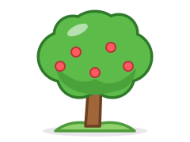
Speech Adventure · หน้าเกมของเด็กทำเสร็จแล้ว รอบนี้เสนอของสะสมให้เด็ก ของจับต้องได้ให้พ่อแม่ และหน้าผู้ใหญ่ที่เรียบขึ้น
ฝั่งเด็กเป็นเกมแล้ว แต่เล่นจบแล้วยังไม่มีอะไรให้เก็บ และฝั่งผู้ใหญ่มีหน้าที่ซ้ำกันจนไม่รู้จะดูตรงไหน · รอบนี้เพิ่มของสะสมที่พิมพ์ออกมาได้จริง และจัดหน้าผู้ใหญ่ให้เหลือเท่าที่ใช้
สมุดสติกเกอร์ และช่วงได้สติกเกอร์ใหม่ตอนจบด่าน
ทุกภาพที่ได้ฝึกในเกม (ส่งของ การ์ด รถไฟ …) กลายเป็นสติกเกอร์ 1 ดวง เก็บแยกหน้าตามหมวด · ช่องที่ยังไม่ได้เป็นเงา เด็กอยากเก็บให้ครบ · เปิดจากปุ่มสมุดบนแผนที่
ปัจจุบัน
แบบใหม่
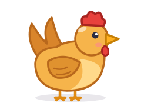
สัตว์6/9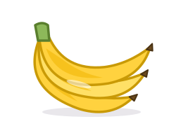
ของกิน3/6ของใช้3/6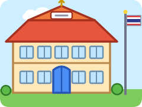
สถานที่2/4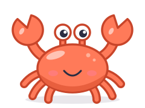
ปู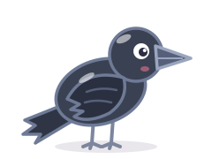
กา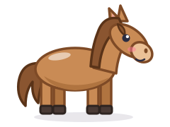
?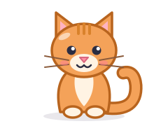
แมว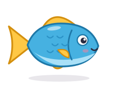
ปลา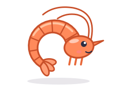
?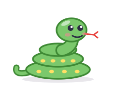
?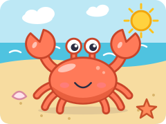
ใหม่!ปูที่ทะเล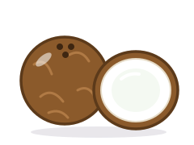
มะพร้าว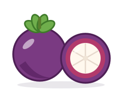
?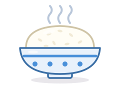
ใหม่!ข้าว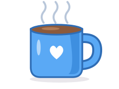
?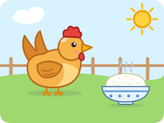
?บนคอม: เปิดเป็นสมุด 2 หน้า ป้ายริบบิ้นด้านข้างพลิกไปหมวดอื่น
เปิดหน้าแรกที่มีสติกเกอร์ใหม่ · แตะสติกเกอร์ พี่ปูพูดชื่อภาพให้ฟัง
แตะช่องที่เป็นเงา: บอกว่าได้จากเกมไหน และพาไปเล่นได้เลย
บนคอม: สมุดกาง 2 หน้า · ลูกศรซ้าย/ขวาพลิกหน้า
หน้าฉลองจบด่านที่มีอยู่แล้ว เพิ่มช่วงที่สติกเกอร์ของด่านนี้ลอยลงสมุด · เด็กรู้ว่าเล่นแล้วได้อะไรกลับไป
ปัจจุบัน
แบบใหม่
บนคอม: ซ้ายสติกเกอร์ ขวาปุ่ม (แบบเดียวกับหน้าจบด่านตอนนี้)
สติกเกอร์เด้งขึ้น แล้วบินเข้าสมุดมุมขวา (+2)
ศูนย์พิมพ์สำหรับผู้ใหญ่ และตัวอย่างกระดาษ A4 ทั้ง 3 แบบ
ผู้ใหญ่เลือก 1 ใน 3 แบบ ดูตัวอย่าง แล้วกดพิมพ์ (หรือบันทึกเป็น PDF จากหน้าต่างพิมพ์ของเครื่อง) · ไม่ต้องลงโปรแกรม
ปัจจุบัน
แบบใหม่

บนคอม: เลือกซ้าย ตัวอย่างขนาดจริงด้านขวา
เลือกแบบ (เลื่อนดูได้) · ตั้งค่าเฉพาะที่จำเป็น · ปุ่มพิมพ์ปุ่มเดียว
หน้าตาตอนพิมพ์ออกมาจริง (พื้นขาว ประหยัดหมึก ภาพชุดเดียวกับในเกม)
แผ่นสติกเกอร์ · เส้นประให้ตัด · พิมพ์ลงกระดาษสติกเกอร์ A4 แบบเต็มแผ่นแล้วตัดเอง
บัตรคำฝึกที่บ้าน · 8 ใบต่อแผ่น · ตัวที่ฝึกเป็นสี · มีเกมสั้น ๆ ให้พ่อแม่เล่นต่อ
ใบประกาศ · พิมพ์เมื่อจบการผจญภัย · มีที่เซ็นของผู้ปกครองและครู
พาการฝึกออกจากจอไปอยู่ในชีวิตประจำวัน ซึ่งเป็นขั้น "ลองใช้จริง" ของหลักสูตรอยู่แล้ว และพ่อแม่รู้ว่าควรพูดคำไหนกับลูก
ภาพระบายสี (เส้นขอบของสติกเกอร์), ตารางสะสมดาวรายสัปดาห์ติดตู้เย็น
พี่ปูสอนเล่นเป็นภาพเคลื่อนไหว และป้ายแนะนำครั้งแรก
แทนรายการข้อความ 5 ข้อ ด้วยภาพเคลื่อนไหวสั้น ๆ ที่ใช้หน้าจอเกมจริง (ในไวร์เฟรมนี้ขยับจริง) · แก้หน้าเกมเมื่อไร คู่มือก็ตรงตามเอง ไม่ต้องอัดคลิปใหม่
ปัจจุบัน
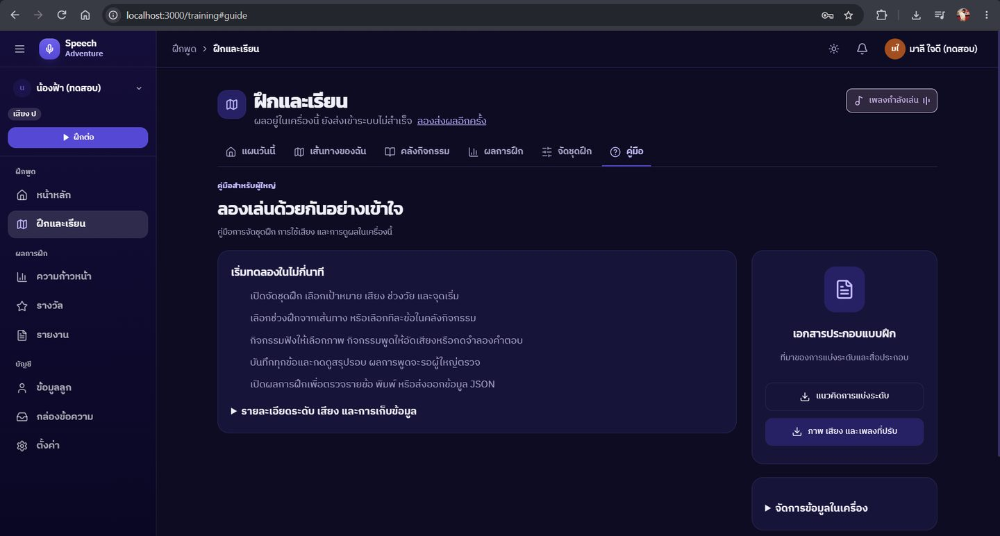
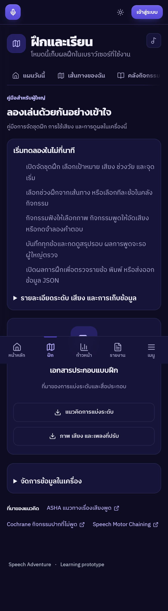
แบบใหม่
บนคอม: วิดีโอซ้าย ลองเล่นและคำถามขวา
ภาพเคลื่อนไหวด้านบน (เปิดเสียงพี่ปูได้) · ลองเล่นจริง 1 ข้อ · คำถามที่เจอบ่อย
เปิดแผนที่ครั้งแรกในเครื่องนี้: มืดลงเล็กน้อย ไฟส่อง 3 จุดทีละจุด แตะที่ไหนก็ได้เพื่อไปจุดถัดไป · ไม่ขึ้นอีกหลังจากนั้น (เปิดใหม่ได้จากคู่มือ)
1 / 3 · ปุ่มทอง = เริ่มเล่นด่านต่อไป
แตะเพื่อไปต่อ1 / 3 · ปุ่มทอง = เริ่มเล่นด่านต่อไป
2 / 3 · ผู้ใหญ่ดูวิธีเล่น ตั้งค่า และผลได้ตรงนี้
แตะเพื่อไปต่อ2 / 3 · ผู้ใหญ่ดูวิธีเล่น ตั้งค่า และผลได้ตรงนี้
3 / 3 · บ้าน = กลับหน้าหลัก สมุด = ดูสติกเกอร์
แตะเพื่อไปต่อ3 / 3 · บ้าน = กลับหน้าหลัก สมุด = ดูสติกเกอร์
รวมหน้าที่ซ้ำ ให้ตัวเลขตรงกัน และพาไปสิ่งที่ต้องทำต่อ
ตอนนี้มีหน้าที่ทำเรื่องเดียวกันหลายที่ (เส้นทางกับแผนที่, ผลการฝึกในห้องฝึกกับความก้าวหน้าในเมนูซ้าย, เลือกระดับ 2 ที่) ผู้ใหญ่เลยไม่แน่ใจว่าควรดูตรงไหน
ปัจจุบัน
แบบใหม่
หน้าแรกของผู้ใหญ่ในห้องฝึก: ปุ่มเดียวพาเด็กเข้าโลกของพี่ปู และบอก 2 เรื่องที่ผู้ใหญ่ควรทำต่อ · การเลือกระดับย้ายไปจัดชุดฝึก
ปัจจุบัน
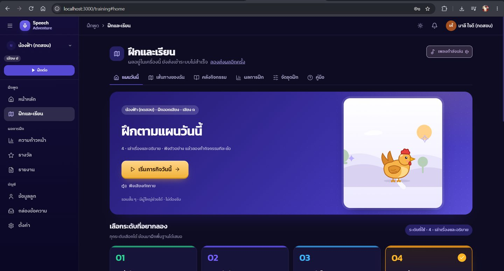
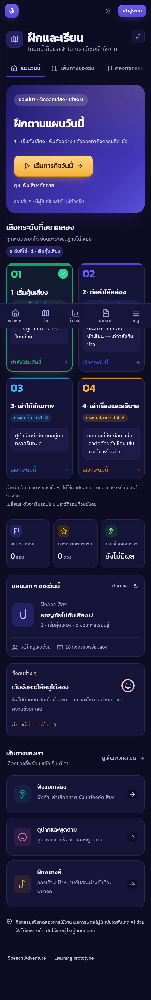
แบบใหม่
บนคอม: แถบเดียวบนสุด ใต้ลงมาเป็นการ์ดสิ่งที่ต้องทำ
ปุ่มทองปุ่มเดียว · 2 เรื่องที่ควรทำต่อ · สัปดาห์นี้
หน้าเดียวสำหรับดูผล · บนสุดคือสิ่งที่ผู้ใหญ่ทำได้ทันที: ข้อที่ยังรอฟัง แตะผลได้ในหน้านี้ ไม่ต้องเปิดทีละรอบ
ปัจจุบัน
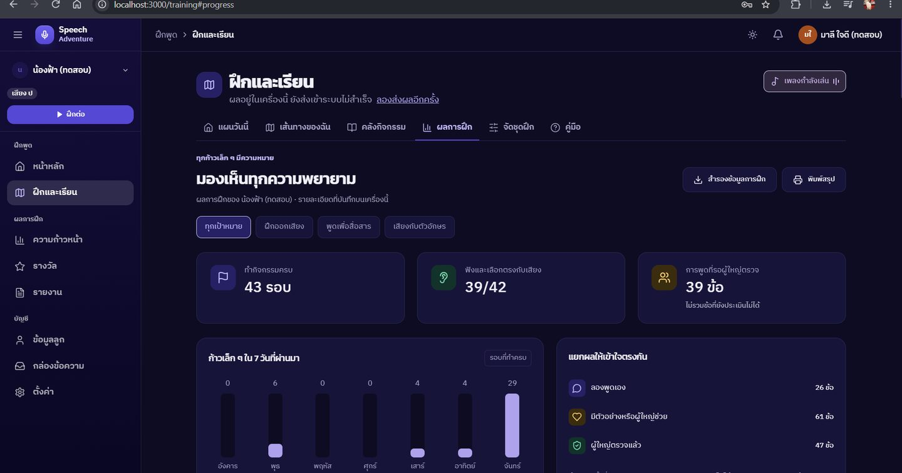
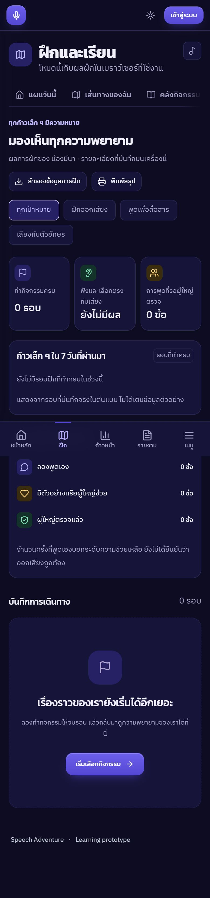
แบบใหม่
บนคอม: ซ้ายรายการรอฟัง ขวาภาพรวม
ข้อรอฟังอยู่บนสุด: ฟังเสียง → แตะหน้ายิ้ม / ฝึกอีก / ข้าม
ตอนนี้เป็นฟอร์มยาวหน้าเดียว (เป้าหมาย ข้อมูลเด็กซ้ำ เสียง ระดับ จุดเริ่ม เลือกรายข้อ) · แบบใหม่ถาม 3 เรื่องที่จำเป็น ที่เหลือเป็น "ตั้งค่าเพิ่มเติม"
ปัจจุบัน
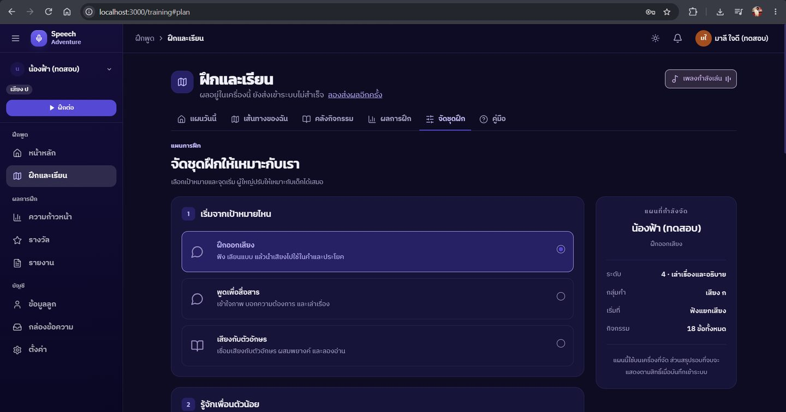
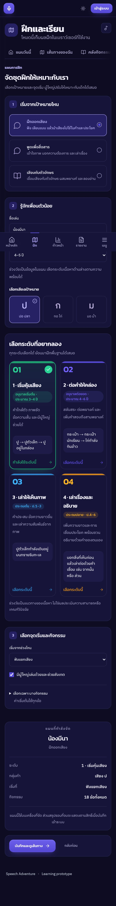
แบบใหม่
1 · ฝึกเรื่องอะไร
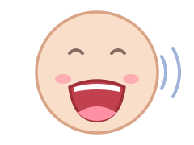
ฝึกออกเสียงให้ชัดฟัง เลียนแบบ แล้วใช้ในคำและประโยค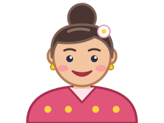
พูดเพื่อสื่อสารเข้าใจ ขอสิ่งที่ต้องการ เล่าเรื่อง2 · เสียงไหน
เลือกเสียงที่น้องยังพูดไม่ชัด ครูหรือนักแก้ไขการพูดแนะนำได้
3 · ระดับไหน
ไม่ใช่เกณฑ์พัฒนาการ ปรับได้ตลอด
บนคอม: 3 คำถามเรียงในหน้าเดียว
1 · เป้าหมาย
เลือกเสียงที่น้องยังพูดไม่ชัด ครูหรือนักแก้ไขการพูดแนะนำได้
ถัดไป2 · เสียง (เฉพาะที่มีเกมรองรับ)
ไม่ใช่เกณฑ์พัฒนาการ ปรับได้ตลอด
เสร็จ เริ่มเล่นได้เลยตั้งค่าเพิ่มเติม: จุดเริ่ม · เลือกข้อเอง ›3 · ระดับ แล้วเริ่มเล่น
ทำทีละชิ้น แต่ละชิ้นใช้ได้ทันทีเมื่อเสร็จ ไม่ต้องรอครบ